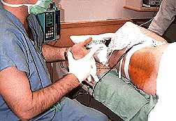

|
 A parturient lies in the left lateral decubitus/fetal position for placement of a labor epidural catheter. The EKG, noninvasive blood pressure, pulse oximeter and electronic fetal heart monitor are observed during initiation of the block. Supplemental oxygen is delivered via mask. The back is prepped and draped after landmarks are identified. |